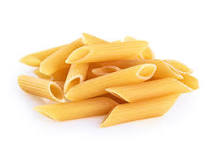

Pasta

Description
Pasta is a traditional Italian staple food typically made from an unleavened dough of wheat flour (often durum
wheat semolina) mixed with water or eggs, formed into distinct shapes, and cooked by boiling or baking. It is
celebrated globally for its versatility, acting as a canvas for a vast array of sauces, meats, and vegetables.
Pasta is a foundational staple of global cuisine with a rich history that debunks the popular myth of Marco Polo
bringing it to Italy from China, as archaeological evidence shows Italians were enjoying early forms of noodles
centuries before his voyage. Originally consumed dry or even prepared as a sweet dessert with sugar and
cinnamon, it wasn't until 1790 that the first official recipe paired pasta with tomato sauce, a combination
delayed because Europeans initially feared tomatoes were poisonous. Today, there are between 350 and 600
distinct pasta shapes worldwide, all engineered to hold specific types of sauces, and while the plural term
spaghetti is globally recognized, a single strand is technically called a spaghetto. Beyond its culinary
versatility, pasta offers unique scientific benefits: cooking it al dente (firm to the bite) slows down
digestion to stabilize blood sugar, and its complex carbohydrates stimulate the brain's production of serotonin,
the neurotransmitter responsible for feelings of happiness. wheat semolina mixed with water or eggs, formed
into distinct shapes, and cooked by boiling or baking.
Ingredients
- 2 Cups of Flour
- 1/2 Teaspoon of Salt
- 3 Large Eggs
- 1 Tablespoon of Olive Oil (or water)
Instructions
- Build the well: Pour the flour onto a clean countertop, shape it into a large mound, and scoop out a deep
hole in the middle to create a sturdy flour wall.
- Whisk the wet ingredients: Crack the eggs directly into the well, then add the olive oil and salt inside the
center.
- Mix carefully: Use a fork to gently whisk the eggs, slowly pulling small amounts of flour from the inside
walls into the liquid until a thick, wet paste forms.
- Bring the dough together: Use your hands or a bench scraper to fold the remaining dry flour into the wet
mixture until everything combines into a shaggy, cohesive ball.
- Add optional ingredients like cheese, or spices as desired.
- Knead until smooth: Press, stretch, and fold the dough continuously for 8 to 10 minutes until it
transforms into a smooth, elastic ball that springs back lightly when poked.
- Let it rest: Wrap the dough tightly in plastic wrap and leave it on the counter at room temperature for 30
minutes to allow the gluten to relax.
-
Divide the dough: Unwrap the rested dough and cut it into 4 equal portions, keeping the pieces you aren't
actively working with covered so they don't dry out.
-
Roll it thin: Use a rolling pin or a crank-style pasta machine to repeatedly roll one piece at a time,
dusting lightly with flour, until the sheet is translucent enough to see your hand through it.
-
Cut your shapes: Dust the thin sheet with flour, roll it loosely into a cylinder, and use a sharp knife to
slice it into your desired ribbon width (such as fettuccine or pappardelle), then unravel the strands
immediately.
-
Boil to perfection: Drop your fresh pasta into a large pot of heavily salted boiling water and cook for just
2 to 3 minutes until it floats to the top and is al dente.
Back to Recipes